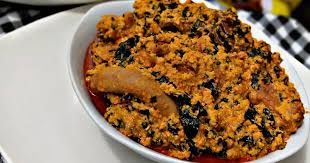

Egusi soup

Description
Egusi soup, a Soup indegenious to the western part of Nigeria, Is made from a specie of Melon seeds of suitable qualities.
There are a variety of ways of which it can be prepared. One of these ways, involves soaking and moulding the ground seeds into balls and dropping them into the pot of brewing soup. fresh leaves are added last and are not made to cook all the way so as to hold it's freshness and nutrients.
Ingredients
- Egusi(Melon seeds)
- Red Oil(Palm Oil)
- Onion.
- Chili.
- Salt and Seasoning.
- Pumpkin leaves.
- Protein Source(Beef, Chicken,Stockfish etc)
Steps
- Bleach your Palm Oil to desire and pour your grated onion and chilli to fry till the Onion becomes a golden brown and the water content of your fresh chilli is mostly evaporated.
- Pour An Appropriate amount of water(the quantity of ground melon seed determines this) into the pot.
- Add seasoning and already preppared protein into the water and leave to simmer till the taste is in the water.
- Mould your balls of ground melon seeds and drop into the soup consistency. Allow to cook till it smells and tastes cooked.
- Put your washed and grated leaf into the soup and mix.
- Drop down and serve with Semolina mould.